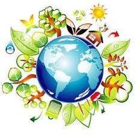

Dia Internacional de la madre Tierra

- 


Realizado por:
Lizbeth Sanchez De La Rosa
4° "E"
Especialidad:
Programacion
Submódulo:
Desarrola Aplicaciones Móviles
Docente:
Lic.Jose Antonio Gómez Hernández
4° "E"
Programacion
Desarrola Aplicaciones Móviles
Lic.Jose Antonio Gómez Hernández
Celebramos el Día Internacional de la Madre Tierra para recordar que el planeta y sus ecosistemas nos dan la vida y el sustento. Con este dia, asumimos, ademas, la responsabilidad colectiva, como nos recordaba la Declaracion de Río de 1992, de fomentar esta armonia con la naturaleza y la madre Tierra. Este dia nos brinda tambien la oportunidad de concienciar a todos los habitantes del planeta acerca de los problemas que afectan a la Tierra y a las diferente formas de vida que en él se desarrollan.

Instituido en 1992 por la Organización de las Naciones Unidas, el Día Internacional de la Madre Tierra es una fecha para reflexionar sobre el efecto que nuestros hábitos y en general nuestra vida cotidiana tiene en el medio ambiente que nos acoge y nos recibe.
La preocupación explícita por nuestro entorno y, en general, el medio ambiente, se ha popularizado solo en las últimas décadas, en buena medida porque los hábitos y prácticas de nuestra vida cotidiana alcanzaron desde mediados del siglo XX un pico negativo en su efecto sobre la naturaleza y sus procesos. La vida industrializada que en el siglo XIX se volvió ya irreversible, cobró años después la factura ambiental que, también esta, se adivinaba inevitable.
Un poco en respuesta a esto, en 1970 se instituyó en Estados Unidos el Día Tierra, un año después de que se registrara un devastador derrame petrolero en las costas de Santa Bárbara, California, con la consecuente protesta de activistas y en especial un senador de la época, Gaylord Nelson, que en compañía de ciudadanos y organizaciones realizó una intensa campaña en pro de la protección del medio ambiente.

"Madre Tierra" es una expresión común utilizada para referirse al planeta Tierra en diversos países y regiones, lo que demuestra la interdependencia existente entre los seres humanos, las demás especies vivas y el planeta que todos habitamos. La Tierra y sus ecosistemas son nuestro hogar. Para alcanzar un justo equilibrio entre las necesidades económicas, sociales y ambientales de las generaciones presentes y futuras, es necesario promover la armonía con la naturaleza y el planeta.

El Diálogo se realizó con el objetivo de inspirar a los ciudadanos y las sociedades a reconsiderar la relación que mantienen con la naturaleza, acorde a la meta 12.8 de los Objetivos de Desarrollo Sostenible con respecto a los patrones de consumo y producción sostenibles.
El evento fue convenido por el Presidente de la Asamblea General, Miroslav Lajcak, quien destacó la importancia del Diálogo para intercambiar ideas sobre desarrollo y patrones de producción y consumo sostenibles en armonía con la naturaleza.


La Conferencia de las Naciones Unidas sobre el Medio Humano de 1972 celebrada en Estocolmo sentó las bases de la toma de conciencia mundial sobre la relación de interdependencia entre los seres humanos, otros seres vivos y nuestro planeta. Asimismo, se estableció el 5 de junio como el Día Mundial del Medio Ambiente y se creó el Programa de las Naciones Unidas para el Medio Ambiente (PNUMA), la agencia de la ONU encargada de establecer la agenda ambiental a nivel global, promover la implementación coherente de la dimensión ambiental del desarrollo sostenible en el sistema de las Naciones Unidas y actuar como un defensor autorizado del medio ambiente.
En 1992, más de 178 países firmaron la Agenda 21, la Declaración de Río sobre el Medio Ambiente y el Desarrollo, y la Declaración de Principios para la Gestión Sostenible de los Bosques en la Conferencia de Naciones Unidas sobre el Medio Ambiente y el Desarrollo (UNCED), que tuvo lugar en Río de Janeiro (Brasil) del 3 y el 14 de junio de 1992.